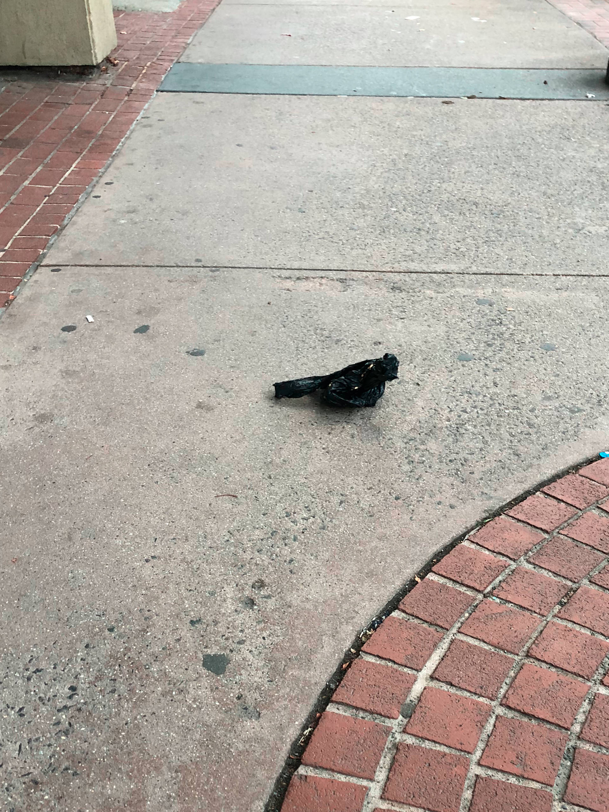
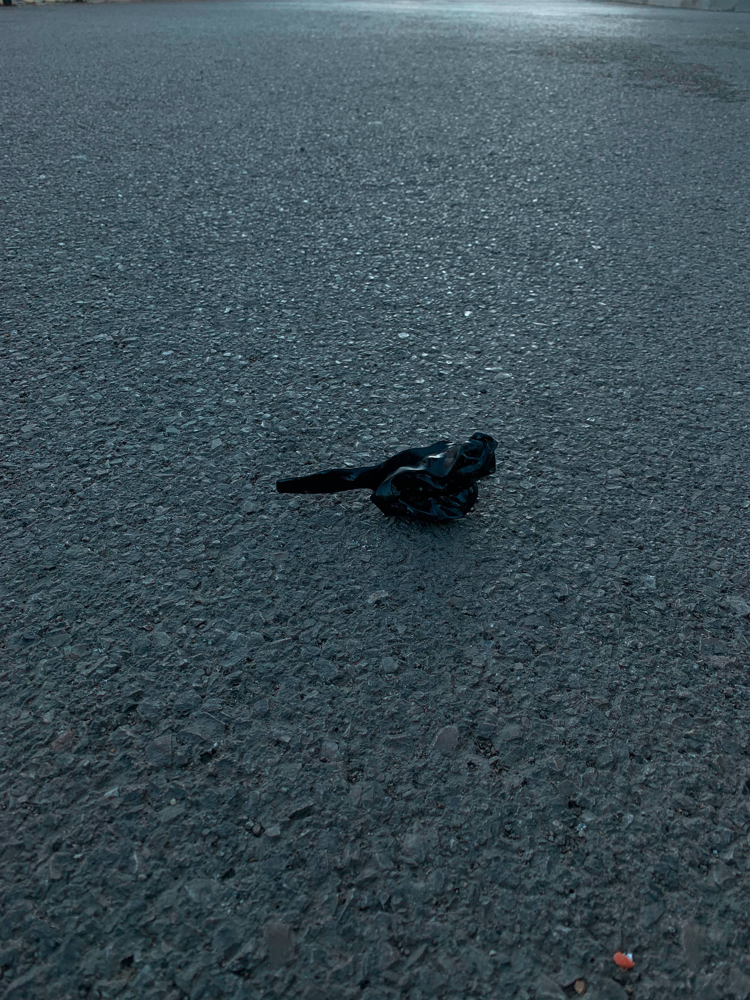
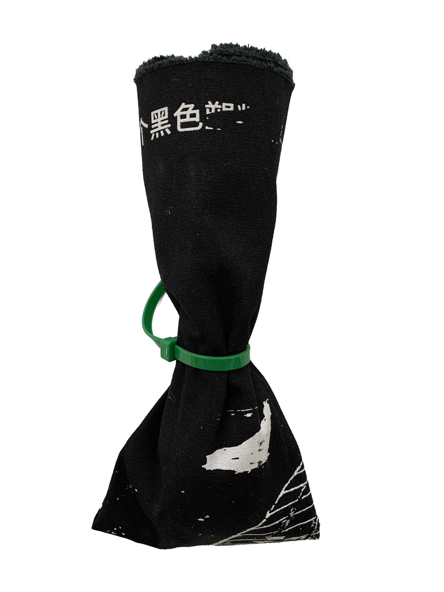
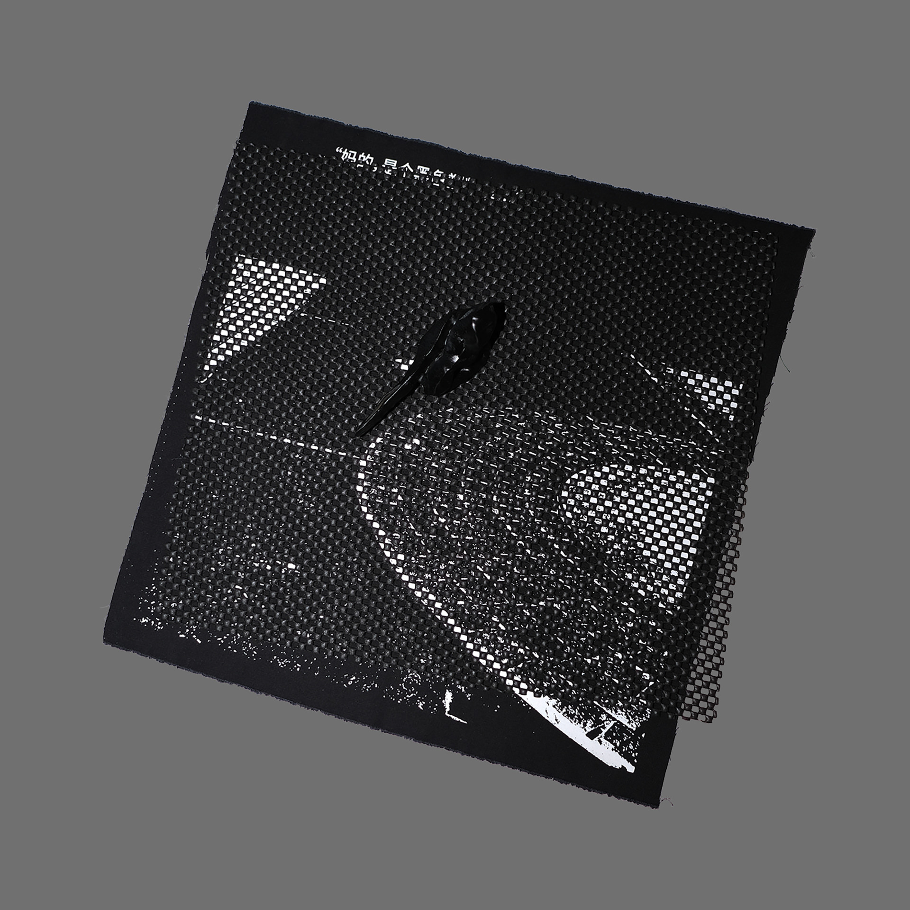

我在Church Street上走着，远远看见一只黑色的鸽子坐在石砖路上，坐的姿势非常扎实，腿完全蜷进了黑色的肚子下。觉得新奇，我赶紧掏出手机，一边伏着身子靠近一边连按拍照。“这鸽子还真是不怕人，竟然在大街上还能坐得一动不动” ——越走越近，越发觉得不太对劲—— “妈的，是个黑色塑料袋……”
I was walking down Church Street when I spotted a black pigeon sitting firmly on the cobblestones, its legs completely tucked under its black belly. Intrigued, I quickly pulled out my phone and started snapping photos as I crouched down to get closer. “This pigeon is really unafraid of people, sitting so still in the middle of the street!”—But the closer I got, the more something seemed off—“Damn, it’s a black plastic bag...”



